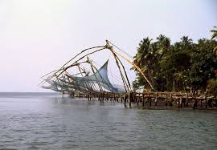

Kochi Fish Catching
Chinese fishing nets (Cheena vala in India or tangkul in Indonesia) are a type of stationary lift net in India and Indonesia. They are fishing nets that are fixed land installations for fishing. While commonly known as "Chinese fishing nets" in India, the more formal name for such nets is "shore operated lift nets".[1] Huge mechanical contrivances hold out horizontal nets of 20 m or more across. Each structure is at least 10 m high and comprises a cantilever with an outstretched net suspended over the sea and large stones suspended from ropes as counterweights at the other end. Each installation is operated by a team of up to six fishermen. While such nets are used throughout coastal southern China and Indochina, in India they are mostly found in the Indian cities of Kochi and Kollam, where they have become a tourist attraction.[2] This way of fishing is unusual in India and almost unique to the area, as it was introduced by Chinese explorers who landed there in the 14th century. Indeed, one interpretation of the city name Kochi is ‘co-chin', meaning ‘like China.’[3]  The fishing harbour at Thoppumpady is a minor fishing port in the state and supplies fish to local and export markets. To further tap the potential of the all-season harbour at Kochi, an international cruise terminal was also constructed Kochi has been hosting India's first art biennale, the Kochi-Muziris Biennale, since 2012, which attracts international artists and tourists.[34]